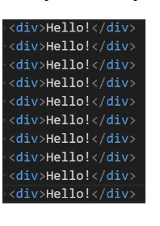
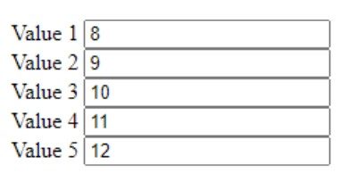
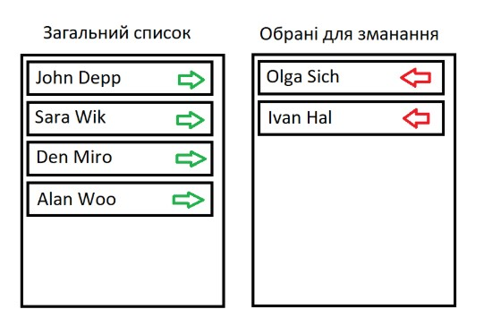

Домашнє завдання №19
-
Задача 1
РішенняДано 10 рядків тексту «Hello!» у окремих div. При кліку на якийсь із них усі наступні повинні бути зафарбовані у червоний колір.
 -
Задача 2
РішенняДано 5 елементів input. При введенні значення у якийсь із них необхідно автоматично заповнювати інші, усі попередні у спадному порядку(кожен попередній має значення на 1 менше за наступний), усі наступні на 1 більше (кожен наступне на 1 більше за попереднього)
 -
Задача 6
РішенняДано список спортсменів. Потрібно сформувати список тих, які будуть брати участь у змаганні. При цьому є два стовпці. В одному відображені всі спортсмени, в іншому – список тих, хто був вибраний. При натисканні на зелену стрілку спортсмен переміщається у список для змагань. При натисканні на червону стрілку спортсмен переміщається у загальний список.
